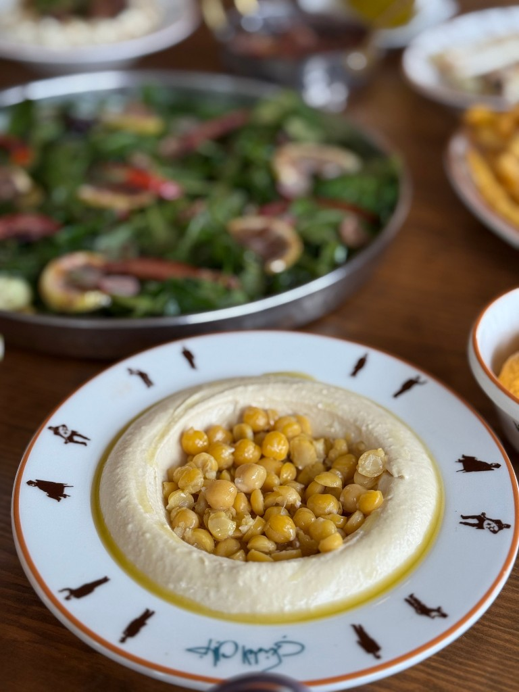

Chickpeas (Cicer arietinum)
First Cultivated: ~7000 BCE
Optimal Climate: Cool winters, warm dry summers
Water Requirement: 14 to 20 inches annually
Chickpeas were a key pulse of early Mediterranean agriculture, supplying plant protein when meat was scarce. They fix nitrogen in the soil and store well as dried seed. Hummus, falafel, and stews continue that legacy across the eastern Mediterranean and beyond.